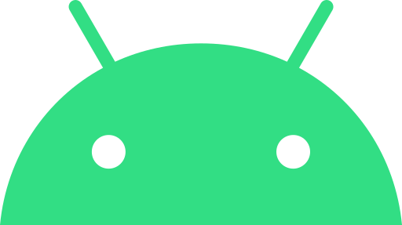
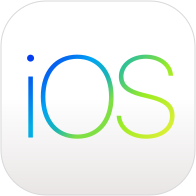
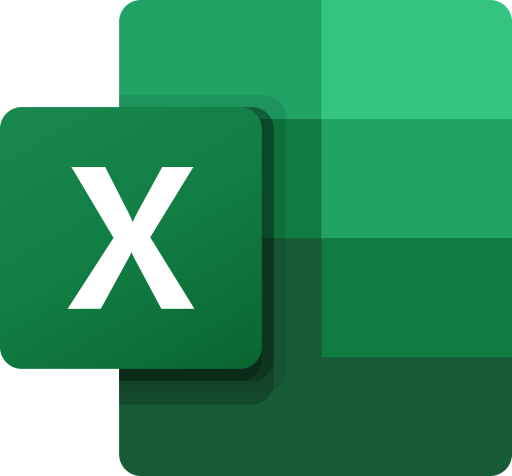
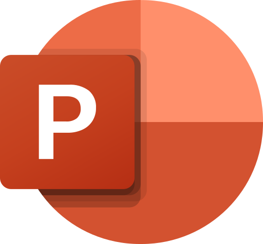
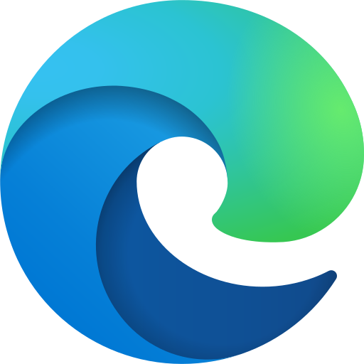
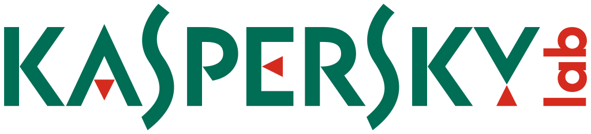

Operatsion tizim nima?
Kompyuter yoqilishi bilanoq birinchi ishga tushadigan boshqaruvchi dastur haqida tushuncha.
Qisqa va lo‘nda ta’rif
Operatsion tizim (OT / Operating System) — qurilma (kompyuter, telefon, planshet) ishga tushishi bilanoq eng birinchi yuklanuvchi, kompyuterning barcha qismlarini boshqaruvchi va inson bilan kompyuter apparat vositalari o‘rtasida muloqotni (interfeysni) ta’minlovchi bosh dasturdir.
- Protsessor, xotira va disklarni nazorat qiladi
- Barcha amaliy dasturlar (Word, DMED) ishlashiga poydevor yaratadi
- Fayl va papkalarni tartibli saqlashni ta’minlaydi
Operatsion tizimsiz kompyuter nima?
Operatsion tizimsiz kompyuter shunchaki "jonsiz temir" bo‘lib qoladi. Siz unga hech qanday buyruq bera olmaysiz, birorta ham dastur ishlamaydi, ekranda esa faqat qora oyna turadi.
Xuddi tibbiyotda inson tanasini bosh miya va asab tizimi boshqarganidek, kompyuterning barcha texnik qismlarini ham Operatsion Tizim boshqaradi.
Qurilmaning ishga tushish zanjiri (Yuklanish bosqichlari):
Quvvat tugmasi (Power ON)
Kompyuter tugmasi bosilganda elektr toki ona plata va barcha qurilmalarga yetkaziladi.
BIOS / UEFI tekshiruvi
Tizim xotira (RAM), disk va klaviaturani tekshirib, xatosiz ishlashini tasdiqlaydi (POST jarayoni).
OT yuklanishi (Booting)
Qattiq diskdan (SSD / HDD) Windows operatsion tizimi operativ xotiraga (RAM) yuklanadi.
Foydalanuvchi Ish Stoli
Dasturlar, drayverlar faollashadi va monitorga Windows ish stoli (Desktop) chiqadi.
Windows tizimining tarixi va versiyalari
Microsoft Windows 1985-yildan bugungi zamonaviy Windows 11 ga qadar qanday rivojlandi?
Microsoft kompaniyasi tomonidan chiqarilgan birinchi grafik interfeys. Faqat sichqoncha orqali boshqarilgan.
Zamonaviy Windows asosi: "Boshlash" (Pusk / Start) tugmasi, Vazifalar paneli (Taskbar) va Ish stoli shu versiyada paydo bo‘lgan.
Dunyo bo‘ylab eng uzoq umr ko‘rgan afsonaviy versiya. Oddiy interfeysi va barqarorligi sabab tibbiyot muassasalarida ko‘p yillar xizmat qilgan.
Tezkorligi va qulayligi bilan eng ishonchli deb tan olingan tizim. Ko‘plab laboratoriya analizatorlari hanuz Windows 7 da ishlaydi.
Sensorli planshetlar uchun mo‘ljallangan plitkali interfeys. An’anaviy Pusk tugmasi yo‘qligi sababli kompyuterlarda kam ommalashgan.
Pusk menyusini qaytargan va yuqori xavfsizlikni ta’minlagan tizim. Hozirda shifoxona va poliklinikalardagi kompyuterlarning asosiy qismida o‘rnatilgan.
Markazlashgan Taskbar va yangi Pusk menyusi, yumaloq burchakli oynalar, yuqori darajadagi xavfsizlik (TPM 2.0) bilan jihozlangan eng so‘nggi versiya.
Dasturlar, ularning turlari va tasnif qoidalari
Kompyuterdagi barcha dasturlarning tasniflanish qoidalari hamda rasmiy rangli logolari.
1-Qoida: Tizimli dasturlar
Mezon: Kompyuter yoqilishi bilan birinchi yuklanadigan va temir qurilmalarni (protsessor, RAM, disk) boshqaruvchi dasturlar. Ularsiz kompyuter ishlamaydi (Windows, macOS, Linux, Android, iOS).
2-Qoida: Amaliy dasturlar
Mezon: Foydalanuvchi aniq bir ishni (matn terish, jadval tuzish, internetga kirish, bemor qabul qilish) bajarishi uchun xizmat qiluvchi dasturlar. Ular Operatsion Tizim ichida ishlaydi.
3-Qoida: Yordamchi vositalar
Mezon: Antiviruslar (Kaspersky), arxivatorlar (7-Zip, WinRAR) va PDF o‘quvchilar ham amaliy dasturlar tarkibiga kirib, ma’lumotlarni himoyalash va ixchamlashtirishga xizmat qiladi.

Microsoft Windows 11 / 10
Grafik interfeysga ega, sichqoncha va klaviatura orqali qulay boshqariladigan eng ommabop kompyuter operatsion tizimi.

Apple macOS
Faqat Apple kompaniyasining MacBook va iMac qurilmalarida ishlaydigan yuqori barqarorlikka ega operatsion tizim.

Linux
Tux pingvini ramzi ostidagi bepul, o‘ta ishonchli va viruslarga chidamli operatsion tizimlar oilasi (Ubuntu, Debian).

Google Android
Google tomonidan ishlab chiqilgan dunyodagi eng keng tarqalgan mobil operatsion tizim.

Apple iOS
Apple smartfonlari uchun maxsus yaratilgan, ma’lumotlar himoyasi kuchli bo‘lgan mobil tizim.
Microsoft Word
Matnli hujjatlar, buyruqlar, protokollar, kasallik tarixi va blankalar yaratish uchun mo‘ljallangan asosiy amaliy dastur.

Microsoft Excel
Jadvallar, hisob-kitob formulalari, diagrammalar va bemorlar soni tahlili uchun eng kuchli amaliy dastur.

Microsoft PowerPoint
Ko‘rgazmali slaydlar, diagrammalar va rasmlar yordamida tibbiy hisobotlarni namoyish etish dasturi.
DMED Axborot Tizimi
O‘zbekiston Respublikasi Sog‘liqni Saqlash Vazirligining yagona elektron tibbiy kartasi va qabul platformasi.
Google Chrome
Tezkor va xavfsiz internet brauzeri bo‘lib, onlayn tibbiy platformalar (DMED, SSV) bilan ishlash uchun xizmat qiladi.

Microsoft Edge
Windows operatsion tizimiga oldindan o‘rnatilgan, PDF formatdagi tahlillarni ham o‘qiy oluvchi zamonaviy brauzer.

Telegram Desktop
Katta hajmdagi fayllar va hisobotlarni tezkor uzatish imkonini beruvchi muloqot dasturi.

Kaspersky & Windows Defender
Kompyuterni viruslar, troyanlar, josus dasturlar va fleshkalar orqali yuquvchi xavflardan himoya qiluvchi amaliy vosita.
7-Zip / WinRAR
Katta hajmli fayl va papkalarni siqib, hajmini kichraytirib yagona arxiv faylga joylovchi amaliy dastur.

Adobe Acrobat Reader
Rasmiy xulosalar, buyruqlar va standart operatsion qoidalarni (SOP) o‘zgarmas holatda o‘qish va chop etish dasturi.
Amaliy dasturlarni qayerdan yuklab olamiz? Original va Crack dasturlar
Kompyuterga dastur o‘rnatishning xavfsiz manbalari hamda litsenziyalangan va buzilgan dasturlar farqi.
Dasturlarni yuklab olishning 4 ta ishonchli manbasi:
Ishlab chiqaruvchining rasmiy sayti
Har bir dasturning o‘z rasmiy veb-sayti bor: microsoft.com (Word/Excel), google.com/chrome, telegram.org. Eng xavfsiz manba.
Microsoft Store (Windows do‘koni)
Windows 10/11 ichidagi rasmiy do‘kon. Barcha dasturlar Microsoft tomonidan virusga tekshirilgan. Pusk menyusidan kiriladi.
Google Play va App Store
Android planshet va smartfonlar uchun Google Play, iPhone/iPad uchun App Store rasmiy ilova do‘konlari.
Muassasa IT bo‘limi
Shifoxona va poliklinika kompyuterlariga dasturlar faqat muassasaning mas’ul IT mutaxassislari tomonidan litsenziya bilan o‘rnatiladi.
Original (Litsenziyalangan) va Crack (Buzilgan) dasturlar farqi:
Original (Litsenziyalangan) Dastur
- Rasmiy ishlab chiqaruvchidan qonuniy olingan yoki rasman bepul tarqatilgan asl dastur
- Doimiy xavfsizlik yangilanishlari (Updates) kelib turadi
- Ichida hech qanday yashirin virus yoki josus kod bo‘lmaydi
- Bemorlarning shaxsiy ma’lumotlari va tibbiy baza 100% himoyalangan bo‘ladi
- Xatosiz va barqaror ishlaydi, hujjatlar to‘satdan o‘chib ketmaydi
Crack (Qonunsiz buzilgan / Pirat) Dastur
- To‘lov himoyasi xakerlar tomonidan buzib ochilgan noqonuniy nusxa
- 90% holatda ichiga troyan, virus va josus dasturlar (stealer) yashirilgan bo‘ladi
- Antivirusni o‘chirishni talab qiladi va shu paytda tizimni zararlaydi
- Shifoxona tarmog‘idagi barcha bemor bazalarini shifrlab, bloklab qo‘yishi mumkin (Ransomware)
- Mualliflik huquqini buzish hisoblanadi va qonunan taqiqlangan
Pusk tugmasi (Boshlash / Start menyusi)
Vazifalar panelidagi Windows belgisi bosilganda ochiladigan asosiy boshqaruv menyusining haqiqiy tuzilishi.
Telegram
Acrobat PDF
 VLC Player
VLC Player
Pusk tugmasiga bog‘liq eng muhim klaviatura kombinatsiyalari:
Fayllar, papkalar va fayl kengaytmalari
Fayl nomining tuzilishi, formatlar va klaviaturadagi tezkor boshqaruv tugmalari.
Fayl va Papka nima?
Fayl — kompyuter xotirasida o‘z nomi va kengaytmasiga ega bo‘lgan, muayyan ma’lumotni saqlovchi birlikdir. Fayl nomi 2 qismdan iborat bo‘ladi: Asosiy_nom . kengaytma (Masalan: Aliyev_Tahlil.docx).
Papka (Katalog / Folder) — fayllarni mavzular bo‘yicha tartibli saqlovchi "elektron jild". Papkaning nuqtadan keyin kengaytmasi bo‘lmaydi. Papka ichida boshqa ichki papkalar va fayllar joylashishi mumkin.
\ / : * ? " < > |
Tibbiyotda eng ko‘p uchraydigan fayl kengaytmalari:
| Kengaytma | Fayl turi | Ochuvchi dastur | Tibbiyotdagi namunasi |
|---|---|---|---|
| .docx / .doc | Matnli hujjat | Microsoft Word | Bemor kasallik tarixi, hamshira hisoboti |
| .xlsx / .xls | Elektron jadval | Microsoft Excel | Dori-darmonlar kirim-chiqim vedomosti |
| .pptx | Taqdimot slaydlari | Microsoft PowerPoint | Hamshiralar uchun sanitariya-gigiyena darsi |
| O‘zgarmas rasmiy hujjat | Adobe Reader, Edge | Vazirlik buyrug‘i, tasdiqlangan laboratoriya xulosasi | |
| .jpg / .png | Tasviriy grafik fayl | Windows Rasmlar | Rentgen, ultratovush (UZD) tekshiruvi surati |
| .mp4 | Video tasvir | VLC Player | Laparoskopik operatsiya video yozuvi |
| .zip / .rar | Arxivlangan fayl | 7-Zip, WinRAR | Oylik bemorlar ro‘yxatining umumiy arxivi |
| .exe | Ishga tushuvchi dastur | Windows OT | DMED dasturining o‘rnatuvchi fayli |
Fayl va papkalar bilan ishlashda tezkor tugmalar (Hotkeys):
Interaktiv Windows 11 Trenajyori
Kompyuterda sichqonchaning o‘ng tugmasi orqali yoki telefonda maxsus tezkor tugmalar yordamida papka ochish, nomlash va o‘chirishni mashq qiling.
Bilimni sinash testi
Mavzu bo‘yicha 20 ta test savoli. Ro‘yxatdan o‘tish va ism kiritish talab etilmaydi.
20 talik Bilimni Sinash Testi
Baholash mezonlari: 50% dan past — 2 | 50%–69% — 3 | 70%–84% — 4 | 85%–100% — 5 (A’lo). Natija shu zahotiyoq kompyuteringizda ko‘rsatiladi.
Testni boshlash